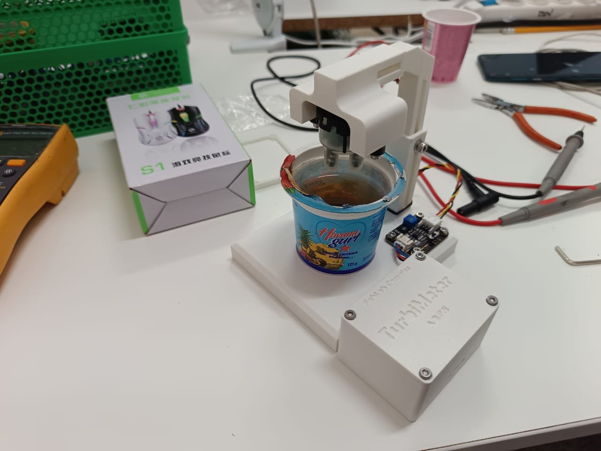
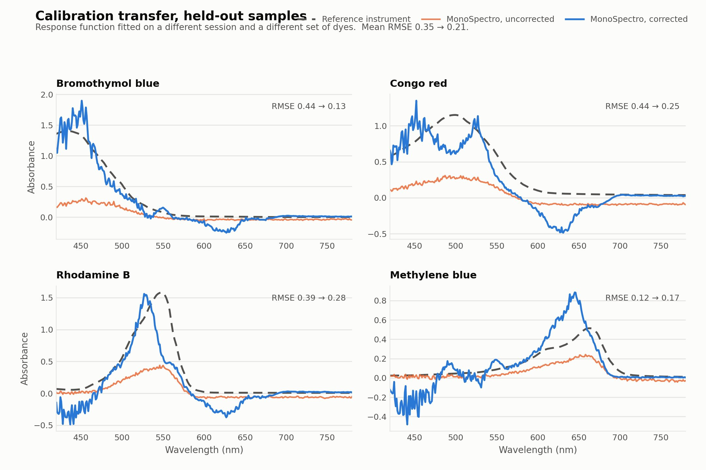
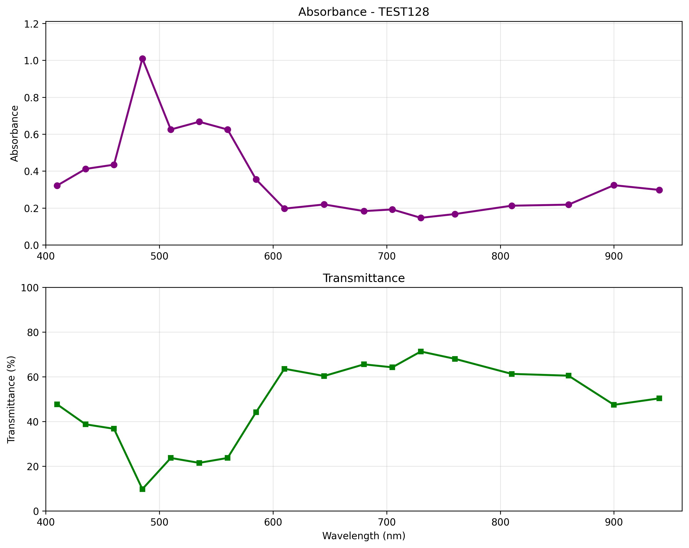
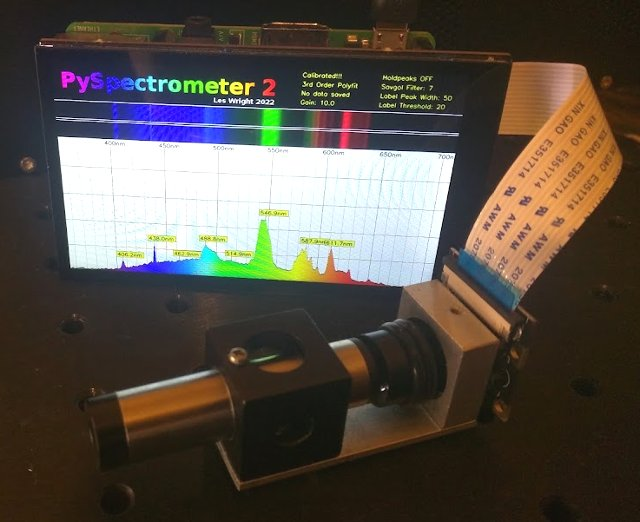
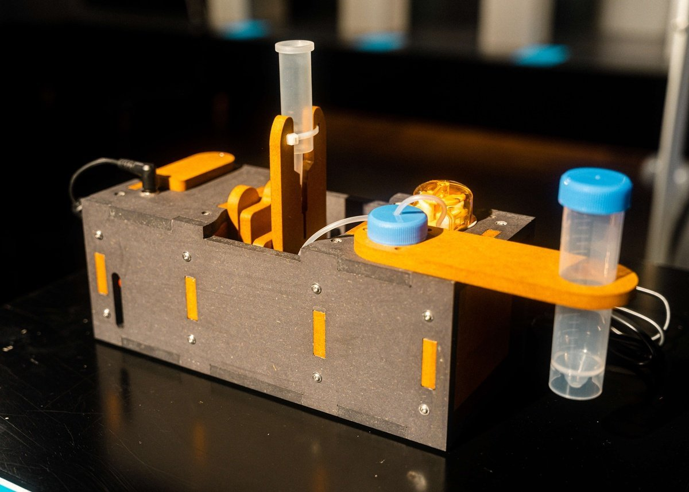

CubanWaterLab
ESENFR
CubanWaterLab
ESENFR
CubanWaterLab
ESENFR
CubanWaterLab
ESENFR
“Microorganisms as indicators of marine pollution: challenges for in situ monitoring” — enviado a Environmental Monitoring and Assessment.
Enviado abril de 2026 · en revisión por pares desde el 14 de junio de 2026“Low-Cost Spectrophotometers: A Comparative Evaluation of Open-Source Architectures.”
Primeras rondas de revisión interna · 2026“Calibration Transfer for a Low-Cost Camera Spectrophotometer: Held-Out Validation Against a Benchtop Reference.”
2026“Monitoreo y Gestión Ambiental en la Transformación Comunitaria: Experiencias de Casablanca”, presentada en convenciones científicas UCLV.
V y 5ª Convención Científica Internacional UCLV, 2025Primer lugar y mención especial general, Jornada Científica Estudiantil de la Facultad de Física (UH) — sombrometría asistida por IA para manchas de hidrocarburo.
Jean Rafael López, estudiante de 4to año de Física · edición 2026Segundo lugar, comisión de Electrónica y Computación de la Jornada Científica Estudiantil — procesamiento de imágenes en el canal de olas.
Jean Rafael López · edición 2025Reportaje sobre el proyecto en el programa “Observatorio Científico”, transmitido por Cubavisión.
7 de agosto de 2024Alex Manuel Rivera Rivera y Luis Abel Rodríguez de Torner se gradúan de FabAcademy, el programa internacional de fabricación digital del MIT Center for Bits and Atoms, en la Université Libre de Bruxelles.
2024 · Perfil de Alex → · Perfil de Luis Abel →Los repositorios y portafolios técnicos que sostienen el trabajo experimental de CubanWaterLab.

Portafolio del curso internacional de fabricación digital en la Université Libre de Bruxelles.
Ver portafolio →
Portafolio del curso internacional de fabricación digital en la Université Libre de Bruxelles.
Ver portafolio →
Portafolio del curso “How To Make (almost) Any Experiments Using Digital Fabrication”, ULB.
Ver portafolio →
Turbidímetro Arduino de bajo costo, con asistente de calibración sobre muestras reales, para el monitoreo comunitario de la calidad del agua.
Ver repositorio →
Espectrofotómetro de código abierto construido con una cámara Raspberry Pi y una rejilla de difracción, calibrado para medir clorofila desde boyas oceánicas.
Ver repositorio →
Software para un espectrofotómetro portátil de bajo costo (sensor AS7265x + ESP32), con interfaz gráfica y exportación a CSV.
Ver repositorio →
Espectrómetro óptico DIY con cámara Raspberry Pi, calibración por regresión polinomial y modo cascada para seguimiento espectral en tiempo real.
Ver repositorio →
Plataforma abierta y asequible de imagenología cuantitativa, adaptada para el análisis de muestras del proyecto.
Ver repositorio →